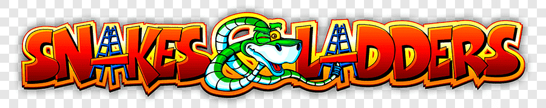
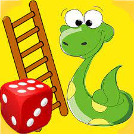

WELCOME TO THE GAME
How To Play
- This is the game for 2 players. Each player will roll a dice one after another
and will move the counter on the board accordingly.
- At your turn, roll the dice and you will move forward your counter by the same number of boxes on the
board in numeric order as appeared on the dice.
- The game's ladders will help you move upwards and go faster. If you reach precisely the number
where the bottom of the ladder shows, then you can move your counter to the top of the ladder. But
if you get to the top of the ladder, you don't have to go down. Just stay there and follow the game.
Also, you can't climb from the middle of a ladder.
- The snakes in the game bring you down. If you reach precisely the number where the head of the snake
shows, you have to move your counter to the tale of the snake. But if you get to the bottom or
middle of the snake, you don't have to go down. Just stay there and follow the game.
- The player will need an exact number to reach 100. If, with the number of dice, the player can go beyond 100,
the player shouldn't move the counter, and his turn will be cancelled.
- The first player wins, who reaches the highest number on the board (Number 100).
Start Game